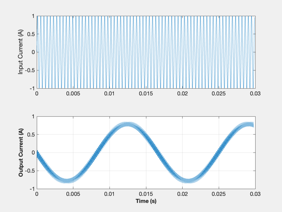

Simulate a matrix converter in steady state.
Simulate a matrix converter in steady state. A matrix converter converts n phase currents into m phase currents without an intermediate DC stage. In effect it pieces together the n phase currents using switches into the m phases. This simulation simulates the steady-state output from a matrix converter.
------------------------------------------------------------------------ See also NewFig, XLabelS, YLabelS, delta ------------------------------------------------------------------------
Contents
%-------------------------------------------------------------------------- % Copyright (c) 2009-2010 Princeton Satellite Systems, Inc. % All rights reserved. %--------------------------------------------------------------------------
Intialize the data
fs = 2281; % Switching frequency fo = 60; % Output frequency ws = 2*pi*fs; wn = 2*pi*fo; vtg = 6/7.2; fsw = fs + fo; tsw = 1/fsw; wf = 2*pi*fsw; dT = tsw/7200; TotT = 0.03; prdnos = round(TotT/tsw); sbintnos = tsw/dT; sbintnos = round(sbintnos); simlen = prdnos*sbintnos + 1; iassto = zeros(simlen,1); ibssto = zeros(simlen,1); icssto = zeros(simlen,1); iansto = zeros(simlen,1); ibnsto = zeros(simlen,1); icnsto = zeros(simlen,1); tsto = zeros(simlen,1); S1 = zeros(round(sbintnos),1); S2 = zeros(round(sbintnos),1); S3 = zeros(round(sbintnos),1); alpha = 45; % in degrees
Switches
for j = 1:sbintnos ang = j*(360/sbintnos); if ang <= alpha S1(j) = 1; S2(j) = 0; S3(j) = 0; elseif ang <= 60 S1(j) = 0; S2(j) = 1; S3(j) = 0; elseif ang <= 120-alpha S1(j) = 1; S2(j) = 0; S3(j) = 0; elseif ang <= 120+alpha S1(j) = 0; S2(j) = 1; S3(j) = 0; elseif ang <= 180 S1(j) = 0; S2(j) = 0; S3(j) = 1; elseif ang <= 240-alpha S1(j) = 0; S2(j) = 1; S3(j) = 0; elseif ang <= 240+alpha S1(j) = 0; S2(j) = 0; S3(j) = 1; elseif ang <= 300 S1(j) = 1; S2(j) = 0; S3(j) = 0; elseif ang <= 360-alpha S1(j) = 0; S2(j) = 0; S3(j) = 1; else S1(j) = 1; S2(j) = 0; S3(j) = 0; end end
Parameters
%-----------
RN = 0.0167;
LN = 0.0628;
RS = 0.0095;
LS = 0.927;
C = 0.755;
tm = 0;
Run the simulation
Spp = [cos(wf*tm) cos(wf*tm-2*pi/3) cos(wf*tm+2*pi/3);cos(wf*tm-2*pi/3) ... cos(wf*tm+2*pi/3) cos(wf*tm);cos(wf*tm+2*pi/3) cos(wf*tm) cos(wf*tm-2*pi/3)]; delta = 0; iassto(1) = 0; ibssto(1) = sin(2*pi/3); icssto(1) = sin(4*pi/3); iabcn = Spp*[iassto(1);ibssto(1);icssto(1)]; iansto(1) = iabcn(1); ibnsto(1) = iabcn(2); icnsto(1) = iabcn(3); tsto(1) = 0; for i = 1:prdnos for j = 1:sbintnos tsto(round((i-1)*sbintnos+j+1)) = dT*((i-1)*sbintnos+j); tm = tsto(round((i-1)*sbintnos+j+1)); indx = round((i-1)*sbintnos+j+1); Spp = [cos(wf*tm) cos(wf*tm-2*pi/3) cos(wf*tm+2*pi/3); ... cos(wf*tm-2*pi/3) cos(wf*tm+2*pi/3) cos(wf*tm);cos(wf*tm+2*pi/3) ... cos(wf*tm) cos(wf*tm-2*pi/3)]; Sp = [cos(wf*tm)*S1(j) cos(wf*tm-2*pi/3)*S2(j) ... cos(wf*tm+2*pi/3)*S3(j);cos(wf*tm-2*pi/3)*S2(j) ... cos(wf*tm+2*pi/3)*S3(j) cos(wf*tm)*S1(j); ... cos(wf*tm+2*pi/3)*S3(j) cos(wf*tm)*S1(j) cos(wf*tm-2*pi/3)*S2(j)]; S = [S1(j) S2(j) S3(j);S2(j) S3(j) S1(j);S3(j) S1(j) S2(j)]; iassto(indx) = sin(ws*tm); ibssto(indx) = sin(ws*tm - 2*pi/3); icssto(indx) = sin(ws*tm + 2*pi/3); K = (2/3)*[cos(wf*tm) cos(wf*tm-2*pi/3) cos(wf*tm+2*pi/3); ... sin(wf*tm) sin(wf*tm-2*pi/3) sin(wf*tm+2*pi/3);0.5 0.5 0.5]; iabcn = S*[iassto(indx);ibssto(indx);icssto(indx)]; iansto(indx) = iabcn(1); ibnsto(indx) = iabcn(2); icnsto(indx) = iabcn(3); end end iansto2 = []; tsto2 = []; for i = 1:100:length(iansto)-2000 iansto2 = [iansto2;mean(iansto(i:i+2000))]; tsto2 = [tsto2;tsto(i)]; end IpCurr = [iassto ibssto icssto]; OpCurr = [iansto ibnsto icnsto]; alpha = 0.0005; OpCurraF = zeros(simlen,1); OpCurraF(1) = iansto(1); for i = 2:length(iansto) OpCurraF(i) = alpha*iansto(i) + (1-alpha)*OpCurraF(i-1); end OpCurr = [OpCurraF ibnsto icnsto];
Plot results
NewFig('Matrix Converter Currents'); subplot(2,1,1),plot(tsto,iassto) ylabel('Input Current (A)') subplot(2,1,2),plot(tsto2,iansto2) grid on XLabelS('Time (s)') YLabelS('Output Current (A)') % PSS internal file version information %-------------------------------------- % $Id: e6cb1a248c1ee3b9fb7c1f8354f057cb69a9ce37 $